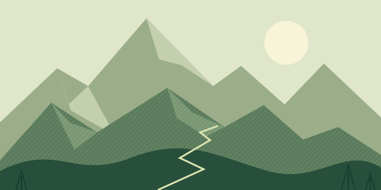
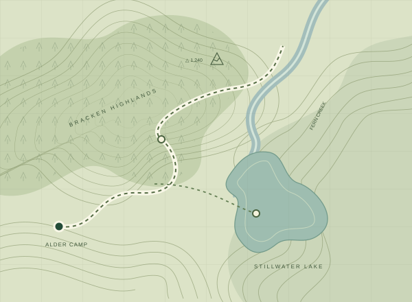
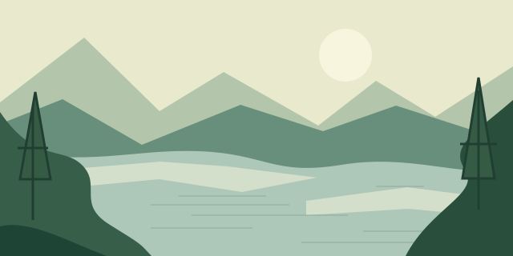
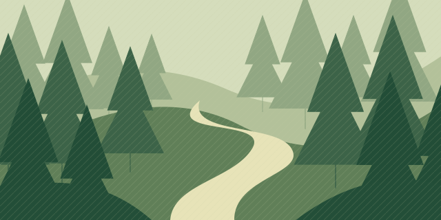

01 / HIGH COUNTRYA high path. A wider perspective.
12.4 km loop4–5 hours
LESS SCROLLING. MORE WANDERING.
FICTIONAL FIELD GUIDE / NO. 024
Ridge lines, quiet water, and a very good reason to go offline.

NORTH COUNTRYGOOD PLACES TO GET LOST IN THOUGHT

01 / HIGH COUNTRYA high path. A wider perspective.

02 / WATER’S EDGESlow mornings belong here.

03 / INTO THE GREENFollow the sound of nothing.